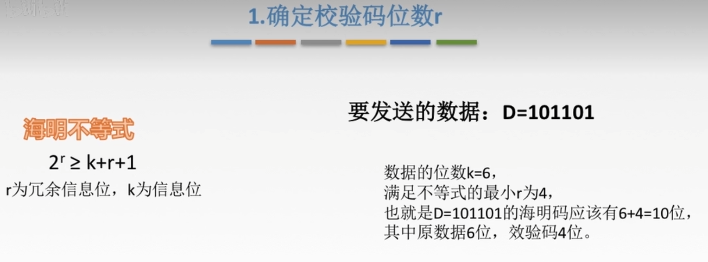
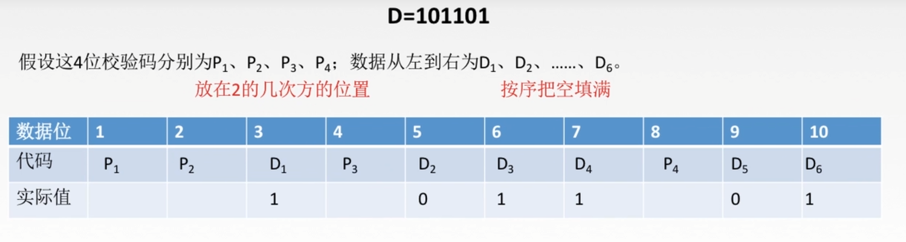
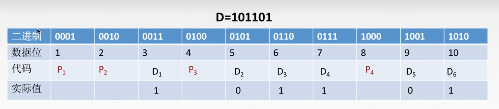
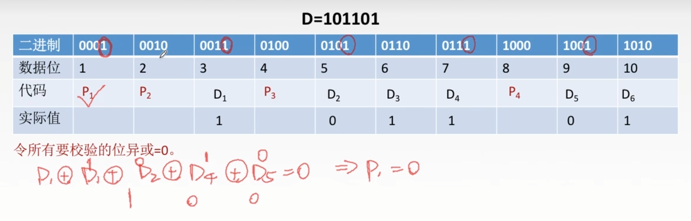
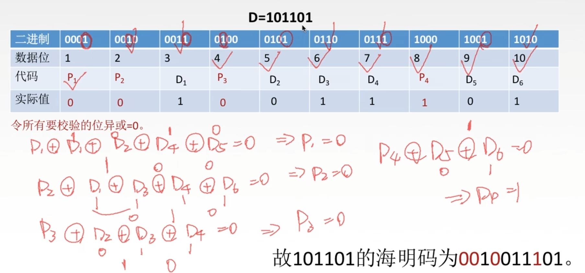
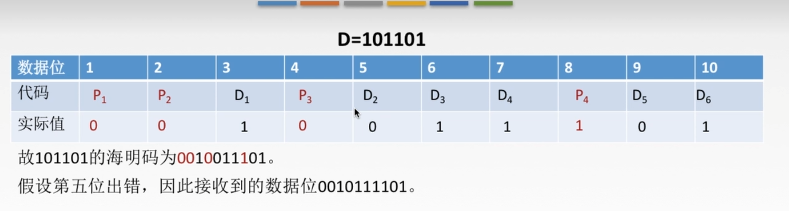
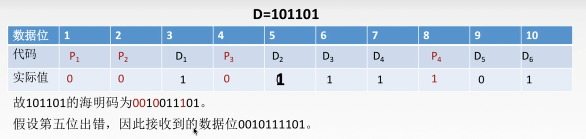
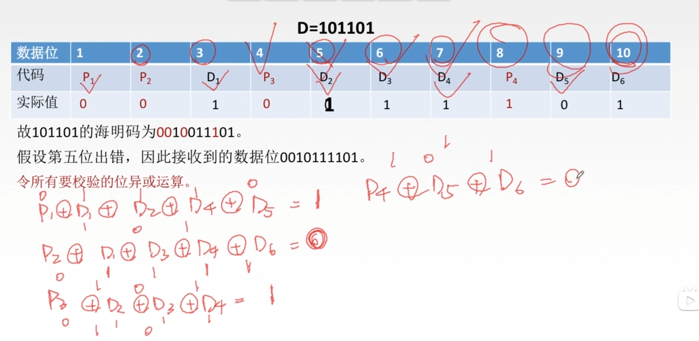
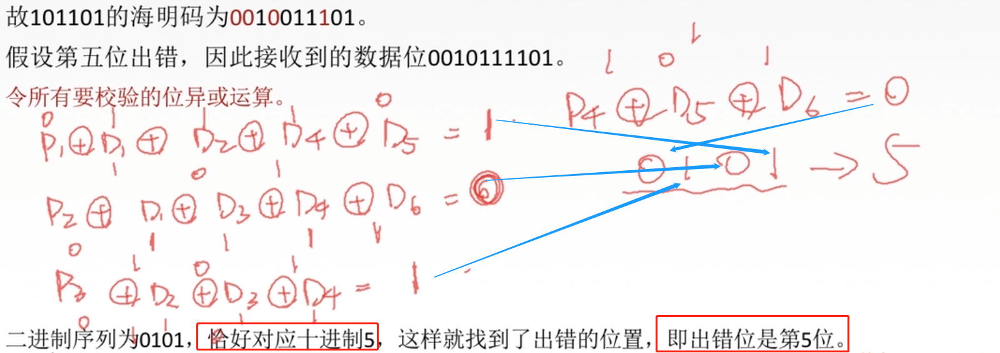

纠错编码：海明码
分为4步
第一步 确认校验码位数r

第二步 确定校验码和数据的位置
为什么是10为数据位？因为4位校验码+6位信息位=10位
校验码放到2的几次方的位置，其他的地方按顺序放已知的信息位

第三步 求出校验码的值
一

- 数据位是1，那么二进制就是0001，至于二进制有几位，取决于最后一位数，比如这边最后一位是10，它的二进制为1010，四位，所以二进制需要四位
二

如何求校验码的值：
我们知道每一位校验位都可以校验几位数据，对于P1来说，它可以校验哪几位呢？
它数据所对应的2进制位
0001，”1”所在的位置是末尾，也就是第一位那么我们就看接下来，还有哪些位的第一位是1，即D1,D2,D4,D5
因此，P1的代码可以校验的数据就是P1,D1,D2,D4,D5
如何处理这几位数据呢？
只需要让所有的要校验的位异或为0，如上图
同理：
P2所对应的2进制位第2位是1，那么我们就去找谁的第2位是1，即D1,D3,D4,D6
因此，P2的代码可以校验的数据就是P2,D1,D3,D4,D6
以此类推…
以下为具体步骤

第四步 检测并纠错

↓↓↓↓↓↓↓↓↓↓↓↓↓↓↓↓↓↓↓↓↓↓↓↓↓↓↓↓↓↓↓↓↓↓↓↓↓↓↓↓↓↓↓↓↓↓↓↓↓↓↓↓↓↓↓↓↓↓↓↓↓↓↓↓↓↓↓↓↓↓↓↓↓↓↓↓↓↓↓↓↓↓↓↓↓↓↓↓↓↓↓↓↓↓↓↓↓↓↓↓↓↓↓↓↓↓↓↓↓↓↓↓↓↓↓

假设在传输过程中发生了错误 ，第五位出错，由0变成1。
但是接收端是不知道哪一位发生错误的，所以需要找出错误的位，并把它纠正
其实步骤和刚才刚好相反
令所有要校验的位做异或运算
运算过程如下

然后，从P4往P1写

最后得到出错的位数是5，即出错位是第5位，然后直接把出错的位数改正成它的反码，这里就是把1变成0
本博客所有文章除特别声明外，均采用 CC BY-NC-SA 4.0 许可协议。转载请注明来自 lcdzzz的博客！